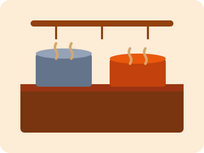

Our mission
To serve delicious, affordable and authentic Nigerian food that brings people together.

Fasanya Joshua's Kitchen prepares and serves traditional Nigerian meals for dine-in, takeaway, delivery and events. Our menu celebrates the flavours of Nigeria, from everyday favourites to festive specials.
Our founder, Fasanya Joshua, began cooking for his neighbours in Surulere in 2005. Word spread quickly, and in 2012 he opened our first small restaurant. Today the whole team runs the kitchen, still using the original family recipes.
To serve delicious, affordable and authentic Nigerian food that brings people together.
To become the most loved home-style Nigerian restaurant in Lagos and beyond.